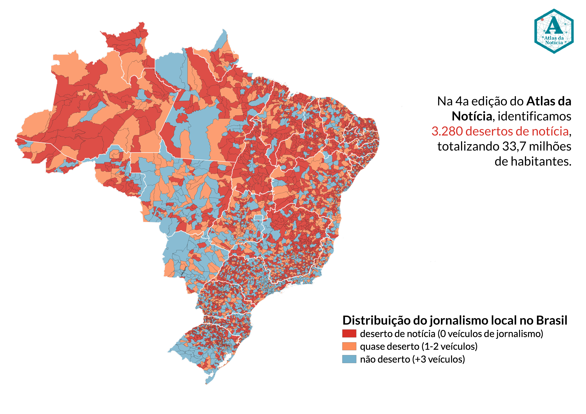
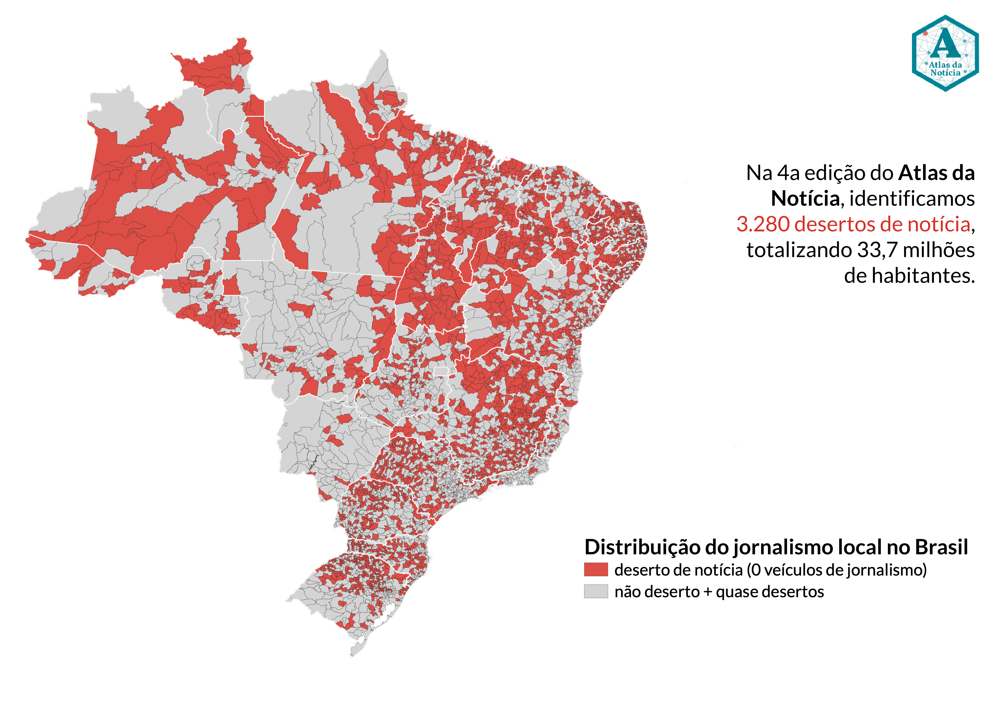
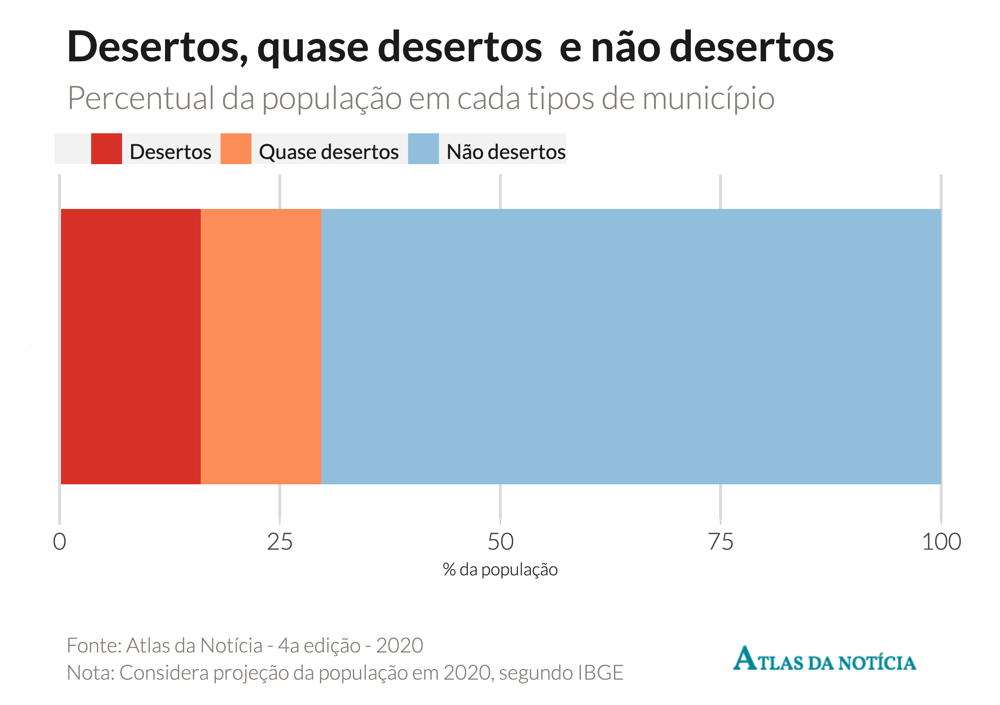
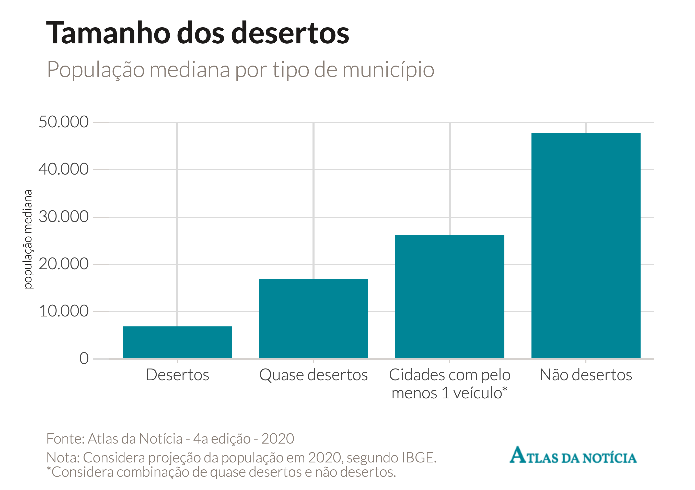
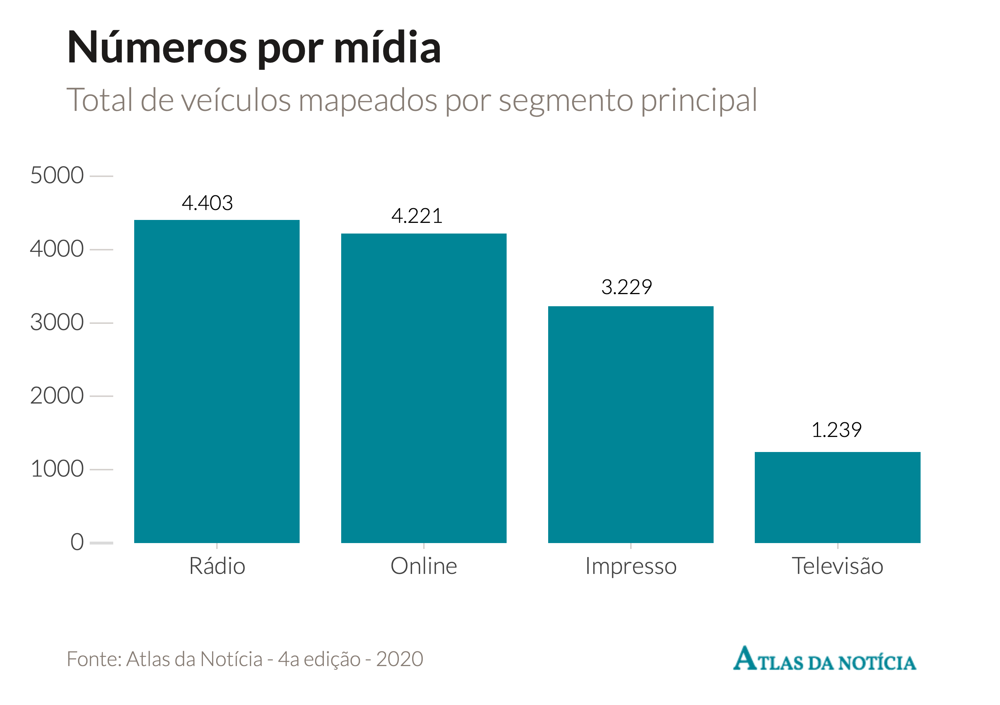

O levantamento do Atlas da Notícia faz um mapeamento geográfico da imprensa, e não uma qualificação dos veículos ou acompanhamento trabalhista. Nossos dados podem fornecer informações para estudos que sigam nessa direção, mas eles mesmos não se propõem a cobrir essas questões.
Municípios com noticiário
Considera não desertos (+3 veiculos) e quase desertos (1-2 veículos)
versão
n
% do total de municípios
diferença v4-v3
v3 (2019)
2.083
37,4%
v4 (2021)
2.290
41,1%
207

Desertos de notícia
Considera municípios que não possuem veículos cadastrados
versão
n
% do total de municípios
diferença v4-v3
v3 (2019)
3.487
62,6%
v4 (2021)
3.280
58,9%
-207

Não desertos
Considera municípios com 3 ou mais veículos cadastrados
versão
n
% do total de municípios
diferença v4-v3
v3 (2019)
1.009
18,1%
v4 (2021)
1.103
19,8%
94
Quase desertos
Considera municípios com 1 ou 2 veículos cadastrados
versão
n
% do total de municípios
diferença v4-v3
v3 (2019)
1.074
19,3%
-
v4 (2021)
1.187
21,3%
113
População em desertos (1)
Número combinado de habitantes por tipo de município
tipo
população
proporção
Desertos (0 veículos)
33.717.134
16,0%
Quase desertos (1 ou 2 veículos)
28.963.829
13,7%
Não desertos (+3 veículos)
149.074.729
70,3%

População em desertos (2)
Número combinado de habitantes por tipo de município
tipo
população
proporção
com veículos
178.038.558
84,0%
sem veículos
33.717.134
16,0%
Tamanho dos municípios
População média e mediana dos municípios
tipo
média
mediana
Desertos (0 veículos)
10.281
6.892
Quase desertos (1 ou 2 veículos)
24.433
16.979
Não desertos (+3 veículos)
135.153
47.825
Cidades com pelo menos 1 veículo
77.832
26.264

Veículos totais mapeados
Número de iniciativas cadastradas no banco de dados
versão atlas
veículos
% sobre ano anterior
v.1.0
11.829
-
v.2.0
12.467
5,4%
v.3.0
13.732
10,1%
v.4.0
15.216
10,8%
Cadastros jornalísticos
Número de veículos classificados como jornalismo ou não
* Note que os dados não correspondem ao ano de fechamento dos veículos, ou seja, em 2019 não fecharam os 331 veículos, e sim foi o tanto de fechamentos que compilamos neste mesmo ano a partir de registros de anos anteriores. Infelizmente, ainda não temos dados confiáveis de fechamentos por ano.
Veículos por região
Número de iniciativas por região do Brasil
região
veículos v4
proporção v4
Sudeste
4.517
34,5%
Sul
3.315
25,3%
Nordeste
2.402
18,3%
Centro-Oeste
1898
14,5%
Norte
960
7,3%
Veículos por segmento*
Classificação das mídias consideradas na pesquisa
segmento
n veiculos v4
proporção v4
Rádio
4.403
33,6%
Impresso
3.229
24,7%
Online
4.221
32,2%
Televisão
1.239
9,5%

Veículos por fonte
Origem dos dados dos cadastros do nosso banco de dados